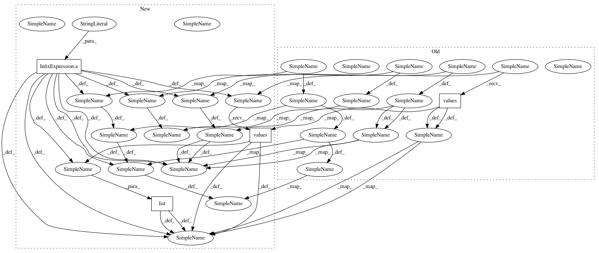

54478492154195895518b5624f1a081ca9d572f4,advanced/mathematical_optimization/examples/plot_compare_optimizers.py,,,#,14
Before Change
import numpy as np
import pylab as pl
results = pickle.load(file("helper/compare_optimizers.pkl"))
//results = pickle.load(file("compare_optimizers_gradients.pkl"))
n_methods = len(results.values()[0]["Rosenbrock "])
n_dims = len(results)
symbols = "o>*Ds"
After Change
import numpy as np
import pylab as pl
results = pickle.load(open(
"helper/compare_optimizers_py%s.pkl" % sys.version_info[0],
"rb"))
n_methods = len(list(results.values())[0]["Rosenbrock "])
n_dims = len(results)
symbols = "o>*Ds"
In pattern: SUPERPATTERN
Frequency: 4
Non-data size: 4
Instances
Project Name: scipy-lectures/scipy-lecture-notes
Commit Name: 54478492154195895518b5624f1a081ca9d572f4
Time: 2017-09-06
Author: gael.varoquaux@normalesup.org
File Name: advanced/mathematical_optimization/examples/plot_compare_optimizers.py
Class Name:
Method Name:
Project Name: scipy-lectures/scipy-lecture-notes
Commit Name: 890244b04eafb8313be6d49d8a34a134801f7a0c
Time: 2017-09-28
Author: gael.varoquaux@normalesup.org
File Name: advanced/mathematical_optimization/examples/plot_compare_optimizers.py
Class Name:
Method Name: